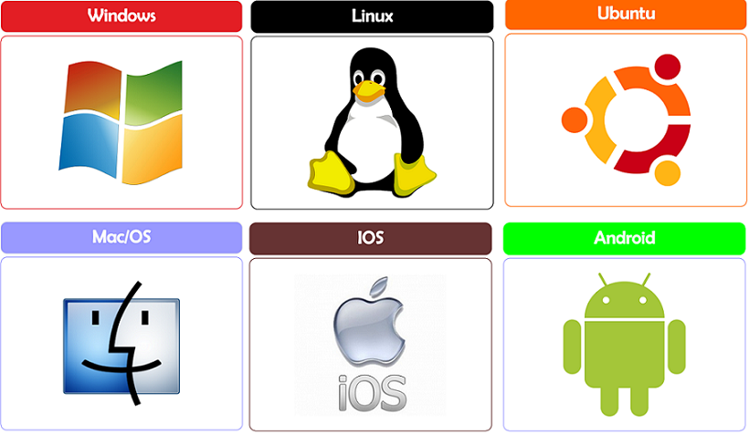

Un sistema operativo es un conjunto de programas que se encuentra
entre el software de aplicaciones y el hardware de la computadora.
Conceptualmente, el software del sistema operativo es un
intermediario entre el hardware y el software de aplicaciones.
Plataforma educativa diseñada para el módulo de
Sistemas Operativos

Al escoger nuestro curso te aseguramos un aprendizaje